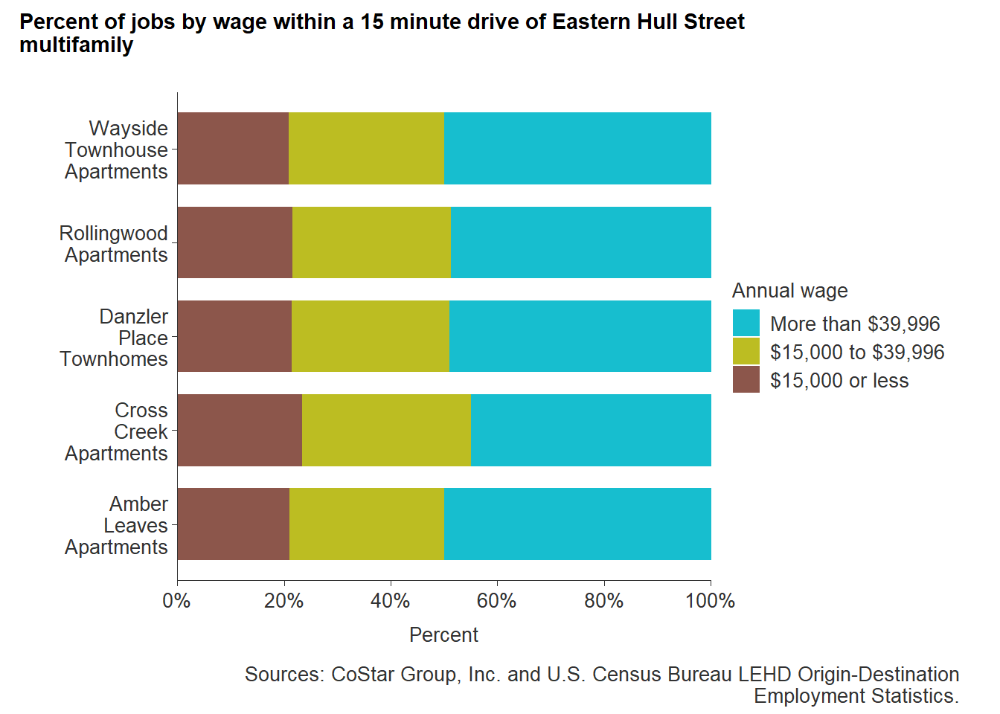

16 Eastern Hull Street Road corridor analysis
This section describes the Eastern Hull Street Road corridor in terms of its rental housing market, proximity of rental homes to amenities, recent major investments, and homeownership relative to the price of single-family rentals.
16.1 The Hull Street Corridor
For the purposes of this analysis, this corridor is defined as the Census tracts 1002.05, 1002.06, 1002.08, 1002.09, 1002.10, and 1002.11. These tracts include many of the neighborhoods directly adjacent to Hull Street Road from Chippenham Parkway to Courthouse Road.
It should be noted that portions of Census tracts 1002.09 and 1002.10 span from Hull Street to Midlothian Turnpike. This results in the inclusion of rental properties that are not technically tied to the Hull Street corridor. Census tract analysis allows for consistency between the analyses conducted here and the previously in Chapter 15 with the Route 1 corridor.
Unlike Route 1, Hull Street (Route 360) does not have the storied interstate tourist history that has since evaporated with the development of the interstate highway system. Along Hull Street towards the City of Richmond, there was significant commercial development that fronted Hull Street, most of which has experienced decline and disinvestment.
But much of the development along Hull Street in Chesterfield County today is much less dense. The corridor in the county remains car-centric with no multifamily properties fronting the corridor and no manufactured home communities. Most development along the corridor is concentrated towards the eastern end at the city-county border, while development fronting the corridor becomes more rare west of Pocoshock Creek and the new Manchester Middle School.
Opportunities exist for multifamily development along the Hull Street corridor, but there has been none in recent years and there are none planned for the foreseeable future.
16.2 Rental housing supply
16.2.1 Number of rental homes
Despite the low number of multifamily properties in the Hull Street corridor, the number of renters — like all areas of the county — has experienced significant increases. From 1,054 renter households in 2010 to 2,388 in 2020, renter households have more than doubled in a decade (a 126 percent increase). Much of this growth occurred between 2018 and 2020, when renter households increased 78 percent from 1,337.
16.2.2 Multifamily properties
Based on a survey of CoStar listed multifamily properties in the Hull Street corridor study area, there are only 1,198 apartments — accounting for only half of renter households (53 percent) in the area. The low number of apartments along the corridor begs the question as to where many renter households find housing when there are so few options in a typical apartment setting. A large share of these apartments are oriented towards the Midlothian Turnpike corridor at the recently developed Element at Stonebridge apartments — 400 mid-rise apartments built in 2016.
| Name | Corridor | Estimated apartment homes |
|---|---|---|
| Element at Stonebridge | Midlothian | 400 |
| Rollingwood Apartments | Hull Street | 278 |
| Cross Creek Apartments | Hull Street | 225 |
| Cloverleaf Lake Townhouse Apartments | Midlothian | 210 |
| Wayside Townhouse Apartments | Hull Street | 81 |
| Amber Leaves Apartments | Hull Street | 67 |
| Danzler Place Townhomes | Hull Street | 18 |
No multifamily properties actually front the Eastern Hull Street corridor. The four multifamily properties in closest proximity to the corridor are more closely associated with the Walmsley Boulevard (State Route 647) corridor.
With no manufactured home communities in the area, single-family home rentals (SFRs) are the option left for many Hull Street corridor residents. An estimated 900 SFRs are located throughout the study area - 14 percent of all single-family detached homes.
Higher concentrations of SFR are located in Census tracts 1002.10 and 1002.11; tracts that adjacent to the Chippenham Parkway and along the city-county border. These tracts have an estimated 21 percent and 20 percent of single-family detached homes being utilized as SFR, respectively.
16.2.3 Rental prices
Rent prices, as estimated by the American Community Survey (ACS), show very little change in rental prices along the Hull Street corridor, except in Census tract 1002.08. This Census tract encompasses a large portion of the Rockwood neighborhood, which has no recorded multifamily properties. Nonetheless, the estimated median gross rent in this area has increased by 64 percent from 2010 to 2020 — from $1,231 to $2,021. Margins of error for this tract remain high in 2019 and 2020 - roughly +/- $1,000 in both years — likely due to small sample sizes.
Other Census tracts in the area have more consistent rent increases - particularly Census tracts 1002.06, 1002.09, and 1002.10. Census tract 1002.11 does not account for a median gross rent until 2020 ($980), which is strange given that CoStar recognizes three multifamily properties in this Census tract, all of which were built pre-1980.
Focusing on the areas adjacent to the Hull Street corridor, CoStar’s data show an average rent across the four existing properties. Changes in average rent have been slight over the past decade, but have been on a steady climb — reaching a decade max at the start of 2022 with an average rent of $1,140.
Over the course of the pandemic, rents in the area have seen upticks much like other parts of the county, including the Route 1 corridor. From Q1 2020 to Q3 2022, average rent saw a 2 percent increase from $1,088 to $1,110. But in 2022 so far, average rent has been in decline from its decade max — potentially signaling some cooling of the hot pandemic housing market.
Breaking out average rent by bedrooms shows a similar pattern among all bedroom sizes, except for studio apartments, in which there are none listed in the study area. Three-bedroom apartments did see a substantial increase in the latter half of 2021 — a $61 increase (5 percent increase) from $1,240 to $1,301, but, like all other apartment types, have seen declines in 2022.
Very little rental price data exists for SFRs in the study area. Across the past four years, there have only been 25 listed SFRs. Thirteen of these 25 SFRs are single-family detached homes, while the remaining are largely condominums or townhomes (11).
List prices have ranged from $900 for a duplex in 2019 to $1,809 for a single-family detached home in 2022. Generally, single-family detached homes have commanded rents above $1,400 and often offer three-bedrooms and two baths. These rents are on par with recent two-bedroom apartments rents in the area — often making a decision between an apartment or single-family detached home on the rental market easy for a family of three or more.

16.2.4 Conditions
Much of the rental housing stock (62 percent) in the Eastern Hull Street corridor was built after 1980 — 1,472 rental homes. The largest share of occupied rental housing was built in the latter half of the 20th century (1960 to 1999). These buildings are anywhere from 20 to 50 years old and are most likely in need of modest to major upgrades.
Multifamily property construction has been rare in the corridor for much of the last half century. Only one development was completed in the 2000s — Element at Stonebridge. This development was the result of the Cloverleaf Mall redevelopment and is oriented towards Midlothian Turnpike, rather than the Eastern Hull Street corridor.
More relevant to the corridor is Cross Creek Apartments, the most recent development in close proximity to the Eastern Hull Street. This 225 unit garden style apartment property was completed in 1991 — 31 years ago — and was the first multifamily development along the Eastern Hull Street corridor since 1978.
The only multifamily property located directly off of the Eastern Hull Street corridor is the Wayside Townhouse Apartmentsm which were built in 1967 — the earliest multifamily development in the area. Only one property (Element at Stonebridge) is rated at four stars, while all other properties are three stars or less. Although largely functional, these lower-tiered properties can expect to need renovations in the coming years.
| Name | Corridor | Year Built | CoStar Rating |
|---|---|---|---|
| Element at Stonebridge | Midlothian | 2016 | 4 |
| Cross Creek Apartments | Hull Street | 1991 | 3 |
| Rollingwood Apartments | Hull Street | 1978 | 2 |
| Amber Leaves Apartments | Hull Street | 1973 | 2 |
| Cloverleaf Lake Townhouse Apartments | Midlothian | 1972 | 2 |
| Danzler Place Townhomes | Hull Street | 1969 | 2 |
| Wayside Townhouse Apartments | Hull Street | 1967 | NA |
16.3 Single-family rental versus purchase
The typical renter in the study area requires an income of $74,441 to afford the median home sales price of $299,000 — the median home sales price for homes sold in the last year. But median renter household incomes in the area top out at $64,952, which are just over $9,000 less than what is needed to purchase a home. With homeownership out of reach for many renter households in the area, SFRs are often the next best option.
| Variable | Value |
|---|---|
| Median sales price | $316,750 |
| Downpayment | 5.0% |
| Closing costs | 1.5% |
| Loan amount | $300,912 |
| Interest rate | 4.72% |
| Monthly utilities | $250 |
| Monthly payment | $1,838.09 |
| Income needed to buy home | $78,775 |
The typical listed rent for a SFR is $1,479 — a few hundred dollars less than the monthly mortgage payment for the average-priced home ($1,838). The income needed to afford a SFR at this price without being cost-burdened is $59,160, which is still well-above what renter households in the study area can afford. In some cases, that gap in income to afford rent is over $25,000.
| Variable | Value |
|---|---|
| Average rent for single-family home | $1,479.00 |
| Income needed | $59,160.00 |
With convenient access to higher paying jobs, this section of the corridor could support additional high-end multifamily development. But for lower income renter households, who already have few options along the corridor, increased development could have negative impacts if affordable multifamily homes are not included, as well.
16.4 Proximity to amenities
Being close to amenities like grocery stores and employment can make a difference in housing affordability for many families on a tight budget. Less time spent traveling often means less money spent on personal vehicle maintenance and gas. It also means more time to spend with family members and more savings that can be spent on housing costs.
16.4.1 Public transportation
Along the Eastern Hull Street corridor there is no public transportation within the county. The nearest stop is just across the city-county border at the Chippenham Mall Shopping Center and is part of Route 1C of the Greater Richmond Transit Company (GRTC). This route takes riders into Downtown Richmond and as far as Northside neighborhood within the city.
To date, extension of GRTC down Hull Street through the county has only been explored in concept. A proposed concept for GRTC expansion could potentially extend service to commercial retail at Commonwealth Center in Midlothian.
For the five multifamily properties located closest to the Hull Street corridor, no properties are within a half mile walking distance to public transit. For individuals without a car, accessing public transit means walking an average of two miles to the Chippenham Mall stop of Route 1C. It also means walking down a portion of Hull Street that is a six-lane highway interchange that has no sidewalks.
16.4.2 Schools
Along the Eastern Hull Street Corridor, there are two Chesterfield County Public Schools:
- Manchester Middle School; and
- J.A. Chalkley Elementary School
Nearby, but more oriented towards the Midlothian Turnpike are:
- A.M. Davis Elementary School; and
- Providence Middle School
All five properties closest to the Eastern Hull Street corridor are within an ideal distance to a Chesterfield County Public School — less than a five minute drive. This provides many families with a convenient drive to take their children to school. The average drive-time distance to a public school for these properties is 3.6 minutes. Properties north of Hull Street would be zoned for either Davis Elementary or Providence Middle School — but no multifamily properties exist on the northside of Hull Street.
16.4.3 Grocery stores
Several ethnic food stores exist at the 360 West Shopping Center at the northwest corner of Turner Road and Hull Street. But full service grocery stores like Food Lion and Kroger are located further west, outside of the study area. Although only a short drive down the road, multifamily properties in the study area are much closer to a convenience store or small market, rather than a full service grocery store.
The average distance to a convenience or small market is about half a mile (0.46 miles), while the average distance to a full service grocery store is 1.51 miles. This distance is negligible for those with a personal vehicle, but for those without a car or unable to drive due to an impairment (e.g. physical or mental disability), traveling to the nearest Food Lion or Kroger can be quite difficult. Those having to walk face a near mile and a half walk along a highway with no sidewalks and vehicles going over 55 mph.
16.4.4 Healthcare
Comparatively, multifamily properties along the Eastern Hull Street corridor are closer to acute general hospitals (an average of 8.6 minutes driving distance away) than properties along the Route 1 corridor (13.5 minutes). Two acute general care hospitals are within close proximity to multifamily properties. This includes Hunter Holmes McGuire Veterans Hospital down Hull Street towards the city, as well as Chippenham Hospital, which is easily accessed by the Chippenham Parkway interchange at the city-county border. Urgent care access is similar to hospital access — as the average drive-time distance is only 8 minutes.
Two Patient First urgent cares are located within close proximity to Eastern Hull Street corridor properties. One is located further west down Hull Street at the Genito Crossing Shopping Center, while the other is located on Midlothian Turnpike. The close proximity of these healthcare resources to existing, as well as potential, multifamily properties along the Eastern Hull Street corridor provides a significant benefit to households experiencing a health crisis or who are in need of on-going care. Both travel times are significantly below the national travel time to a hospital in a suburban setting (12 minutes).1
16.4.5 Job centers
There are very few commercial retail centers located along the Eastern Hull Street corridor. Furthermore, multifamily properties — located off of Walmsley Boulevard, a secondary road — are not adjacent to any major commercial uses. This means that many residents must walk quite a distance or more likely drive to work. There is little nuance in regards to property location to jobs as all properties are located within a mile of each other.
Of the jobs within a 15 minute drive of properties in the area, nearly half (49 percent) of those jobs pay more than $3,333. The large share of jobs paying such high wages can be attributed to the proximity of the Chippenham Parkway interchange, which allows commuters to take Chippenham to the Powhite Parkway and into Downtown Richmond.

16.5 Public and private investments
The development patterns of the Eastern Hull Street corridor have largely been similar to that of the Route 1 corridor — car-centric suburban development. However, the county portion of the Hull Street corridor does not have the storied interstate travel history of the Route 1 corridor. As such revitalization along the Eastern Hull Street corridor has not been a major priority.
Nonetheless, the county has continued to invest in this part of the county as its population has grown. In the summer of 2020, the County completed construction on a brand new middle school facility — Manchester Middle School. This replacement of the former 1964 building for $41 million now serves up to 1,100 students.
Further down the corridor and outside the study area, the County is also encouraging the redevelopment of older retail shopping centers and strip malls like Rockwood Square Shopping Center. The County recently approved plans to develop Rockwood Square into 332 condominiums and townhomes.2
16.5.1 Case study
Rockwood Square Shopping Center
 Photo: Areaprops.com
Photo: Areaprops.com
Although outside of the Eastern Hull Street corridor study area, the Rockwood Square Shopping Center redevelopment offers an example of the possibilities for aging shopping centers within the study area. This strategy of redeveloping older strip malls and commercial shopping centers is a vision among Chesterfield County planners to transform struggling commercial retail hubs into more vibrant mixed-use developments.
Stanley Martin Homes is proposing the development of the Rockwood Square Shopping Center — in line with the County’s overall goals for the Rockwood area. Their proposal, which was approved by the County Board of Supervisors in June 2022, will see the development of 322 condominiums and townhomes across 25-acres, which includes the Rockwood Golf Park. Although no homes will be for rent and no sales prices have been determined, this project represents the potential for increased residential development along other portions of the Hull Street corridor.